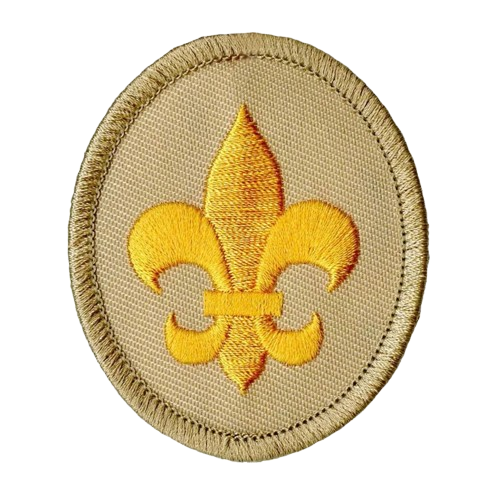
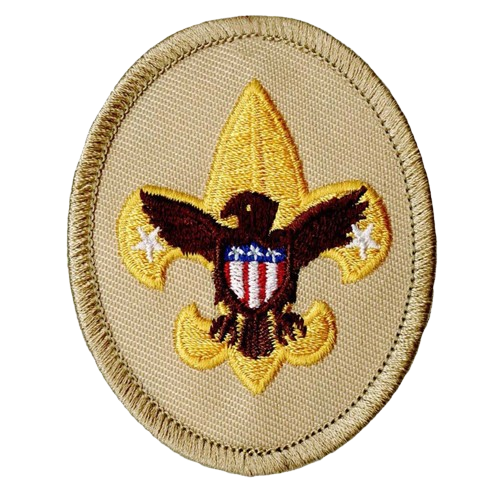
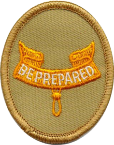
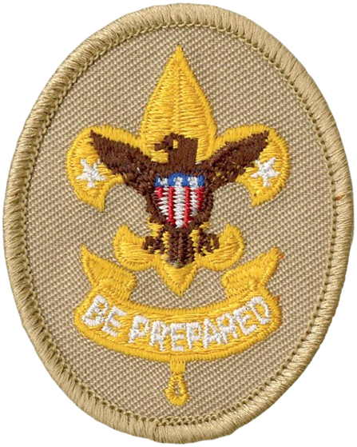
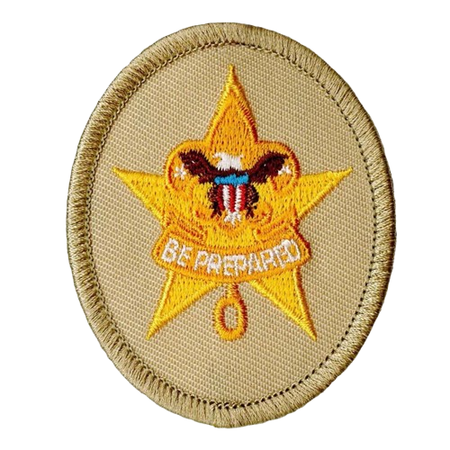
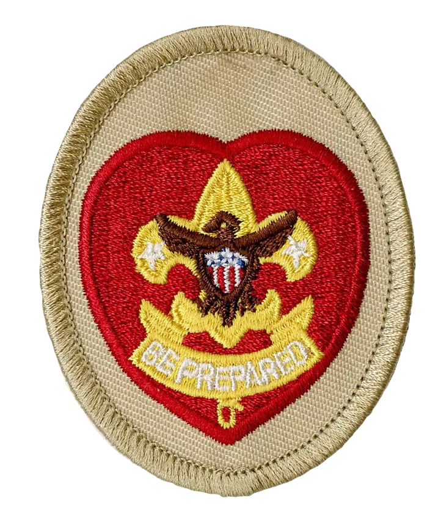
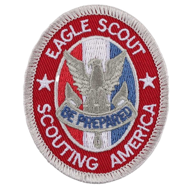

Scout

First step where scouts learn basics, the Scout Oath, and troop expectations.
Path from Scout to Eagle
Scouts advance by learning skills, showing leadership, and completing service. Here is the rank path in order: Scout → Tenderfoot → Second Class → First Class → Star → Life → Eagle.

First step where scouts learn basics, the Scout Oath, and troop expectations.

Builds early outdoor skills like camping basics, first aid, and physical fitness goals.

Scouts gain stronger map, hiking, and nature skills while taking on more responsibility.

A major milestone showing solid scoutcraft ability and dependable patrol teamwork.

Focuses on leadership, service hours, and continuing merit badge progress.

Prepares scouts for Eagle by building advanced leadership and service experience.

Highest rank earned through dedication, leadership, and a completed Eagle project.